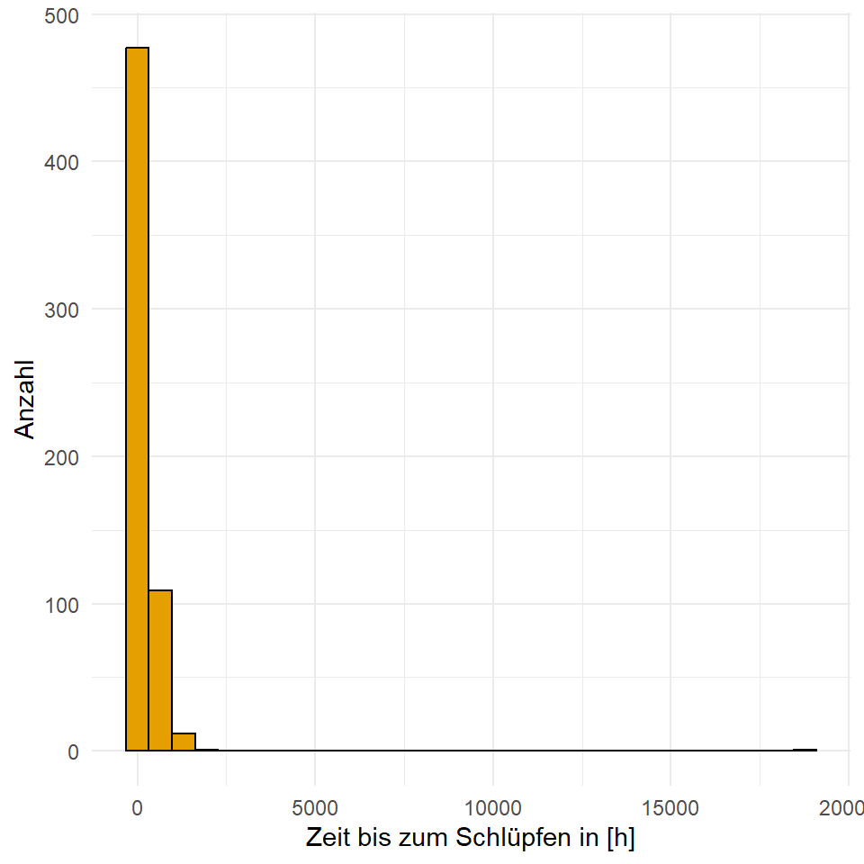
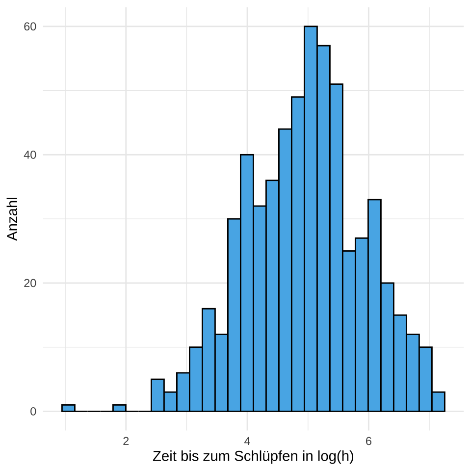
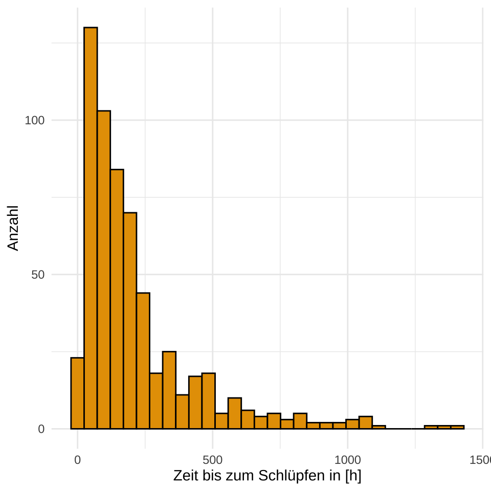
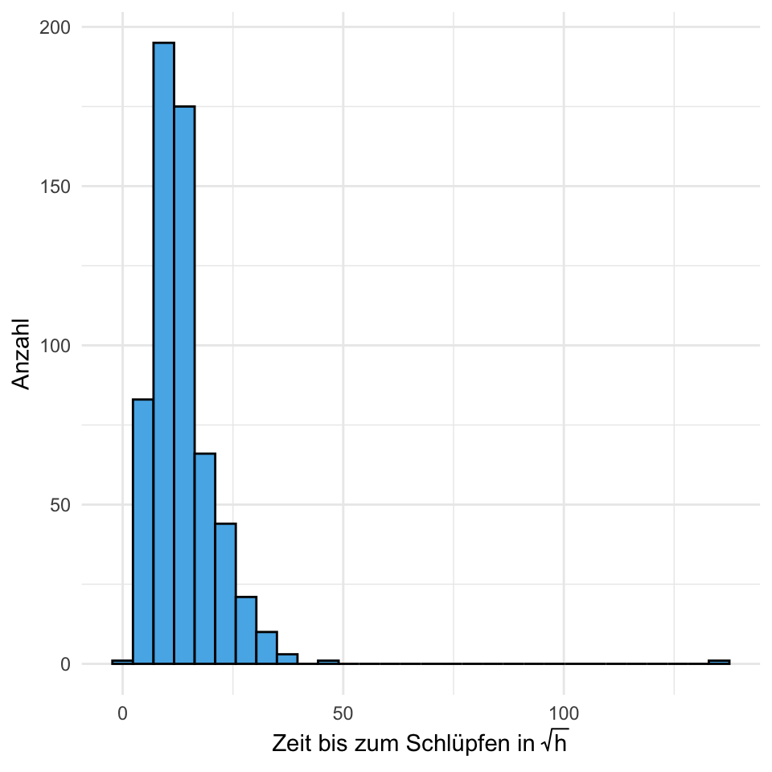
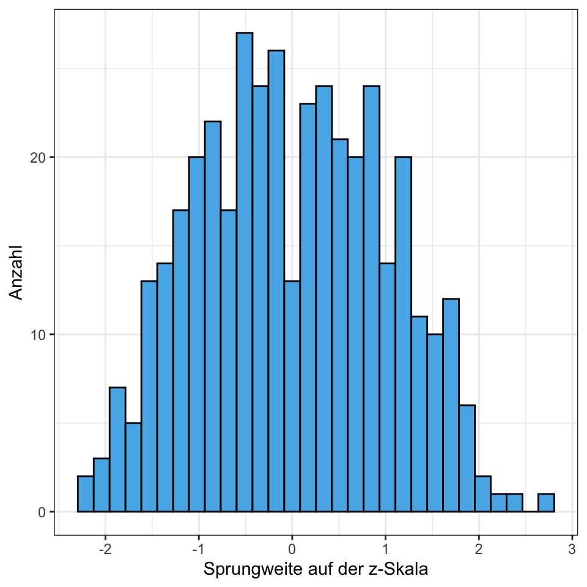
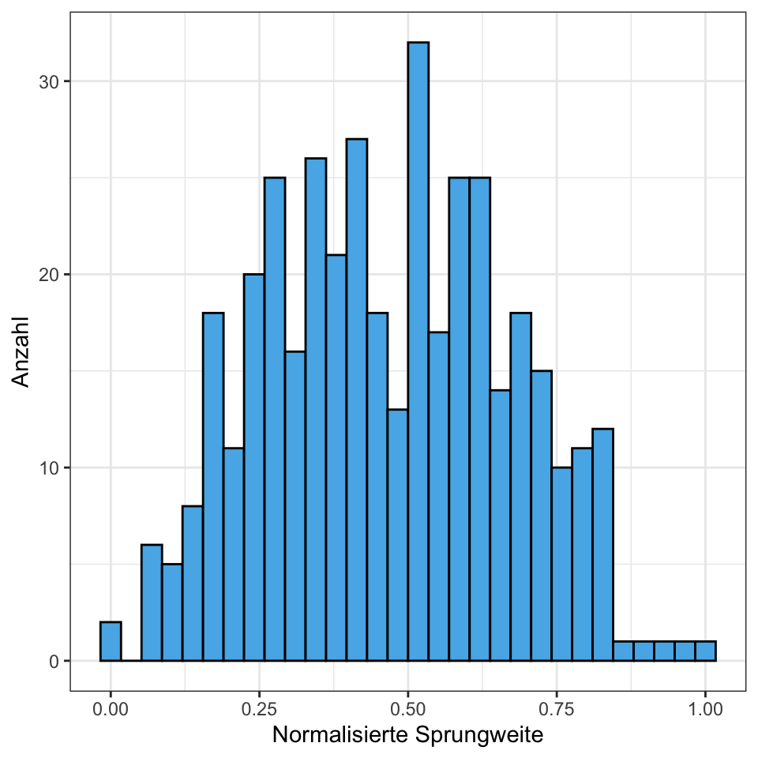

15 Transformieren von Daten

Ich verweise hier auch nochmal auf das tolle Tutorial von Matus Seci auf dem Coding Club
Warum müssen wir Daten transformieren? Meistens hat dies zwei Hauptgründe.
- Wir wollen eine ANOVA oder eine Gaussian lineare Regression rechen und benötigen ein normalverteiltes Outcome \(y\)
- Wir wollen einen Algorithmus zur Prädiktion (deu. Vorhersage) nutzen und haben sehr viele Einflussvariablen \(x\) in sehr unterschiedlichen Einheiten.
Im ersten Fall wollen wir meist unsere Daten \(log\)-Transformieren um aus einem nicht-normalverteilten Outcome \(y\) ein \(log\)-normalverteiltes \(y\) zu erschaffen. Im zweiten Fall wollen wir unsere Daten Standardisieren oder Normalisieren. Wir brauchen normalisierte Daten später beim Klassifizieren im Rahmen von maschinellen Lernverfahren.
Wir wollen uns nun die Verfahren zur Transformation von Daten in den folgenden Abschnitten einmal alle anschauen.
15.1 Genutzte R Pakete für das Kapitel
Wir wollen folgende R Pakete in diesem Kapitel nutzen.
pacman::p_load(tidyverse, magrittr, conflicted)
conflict_prefer("select", "dplyr")
conflict_prefer("filter", "dplyr")Am Ende des Kapitels findest du nochmal den gesamten R Code in einem Rutsch zum selber durchführen oder aber kopieren.
15.2 Daten
Wir wollen uns in diesem Kapitel mit der normalverteilten Variable jump_length gemessen in [cm] und der nicht-normalverteilten Variable hatch_time gemessen in [h] aus dem Datensatz flea_dog_cat_length_weight.csv" beschäftigen. Wir wählen über die Funktion select() nur die beiden Spalten aus dem Datensatz, die wir benötigen.
data_tbl <- read_csv2("data/flea_dog_cat_length_weight.csv") %>%
select(jump_length, hatch_time)In der Tabelle 15.1 ist der Datensatz data_tbl nochmal dargestellt. Wir zeigen hier nur die ersten sieben zeilen des Datensatzes.
| jump_length | hatch_time |
|---|---|
| 16.93 | 68.560703 |
| 16.22 | 131.663962 |
| 18.96 | 94.630047 |
| 19.83 | 110.037621 |
| 17.37 | 103.202382 |
| 14.45 | 326.905572 |
| 15.46 | 360.895299 |
Im Folgenden nutzen wir oft die Funktion mutate(). Schau dir im Zweifel nochmal im Kapitel zu Programmierung die Funktion mutate() an.
15.3 \(log\)-Transformation
Wir nutzen die \(log\)-Transformation, wenn wir aus einem nicht-normalverteiltem Outcome \(y\) ein approxomativ normalverteiltes Outcome \(y\) machen wollen. Dabei ist wichtig, dass wir natürlich auch die Einheit mit \(log\)-transformieren.
Im Folgenden sehen wir die \(log\)-Transformation der Variable hatch_time mit der Funktion log(). Wir erschaffen eine neue Spalte im tibble damit wir die beiden Variable vor und nach der \(log\)-Transformation miteinander vergleichen können.
log_tbl <- data_tbl %>%
mutate(log_hatch_time = log(hatch_time))Wir können dann über ein Histogramm die beiden Verteilungen anschauen. In Abbildung 15.1 (a) sehen wir die nicht transformierte, rohe Daten. Es gibt einen klaren Peak Schlüpfzeiten am Anfang. Dann läuft die Verteilung langsam aus. Wir können nicht annehmen, dass die Schlüpfzeiten normalverteilt sind. Abbildung 15.1 (b) zeigt die \(log\)-transmutierten Daten. In diesem Fall sehen wir normalverteilte Daten. Wir haben also ein \(log\) normalverteiltes Outcome \(y\) mit dem wir jetzt weiterechnen können.


15.4 Wurzel-Transformation
Die Wurze-Transformation ist eine etwas seltenere Transformation. Meist wird die Wurzel-Transformation als die schwächere \(log\)-Transformation bezeichnet. Wir sehen in Abbildung 15.2 (b) den Grund dafür. Aber zuerst müssen wir aber über die Funktion sqrt() unsere Daten transformieren.
sqrt_tbl <- data_tbl %>%
mutate(sqrt_hatch_time = sqrt(hatch_time))In Abbildung 15.2 (a) sehen wir die nicht transformierte, rohe Daten. Es gibt einen klaren Peak Schlüpfzeiten am Anfang. Dann läuft die Verteilung langsam nach rechts aus. Wir können nicht annehmen, dass die Schlüpfzeiten normalverteilt sind. Abbildung 15.2 (b) zeigt die Wurzel-transmutierten Daten. Unser Ziel besser normalverteilte Daten vorliegen zu haben, haben wir aber mit der Wurzel-Transformation nicht erreicht. Die Daten sind immer noch rechtsschief. Wir würden also die \(log\)-Transformation bevorzugen.


15.5 Standardisierung
Die Standardisierung wird auch \(z\)-Transformation genannt. In dem Fall der Standardisierung schieben wir die Daten auf den Ursprung, in dem wir von jedem Datenpunkt \(y_i\) den Mittelwert \(\bar{y}\) abziehen. Dann setzen wir noch die Standardabweichung auf Eins in dem wir durch die Standardabweichung \(y_s\) teilen. Unser standardisiertes \(y\) ist nun standard normalverteilt mit \(\mathcal{N(0,1)}\). Wir nutzen für die Standardisiwerung folgende Formel.
\[
y_z = \cfrac{y_i - \bar{y}}{s_y}
\] In R können wir für die Standardisierung die Funktion scale() verwenden. Wir müssen auch nichts weiter in den Optionen von scale() angeben. Die Standardwerte der Funktion sind so eingestellt, dass eine Stanardnormalverteilung berechnet wird.
scale_tbl <- data_tbl %>%
mutate(scale_jump_length = scale(jump_length))In Abbildung 15.3 (a) sehen wir nochmal die nicht transformierten, rohen Daten. Wir haben in diesem Beispiel die normalvertielte Variable jump_length gewählt. Der Mittelwert von jump_length ist 19.3 und die Standardabweichung ist 3.26. Ziehen wir nun von jedem Wert von jump_length den Mittelwert mit 19.3 ab, so haben wir einen neuen Schwerpunkt bei Null. Teilen wir dann jede Zahl durch 3.36 so haben wir eine reduzierte Spannweite der Verteilung. Es ergibt sich die Abbildung 15.3 (b) als Standardnormalverteilung. Die Zahlen der auf der x-Achse haben jetzt aber keine Bedeutung mehr. Wie können die Sprungweite auf der \(z\)-Skala nicht mehr biologisch interpretieren.


15.6 Normalisierung
Abschließend wollen wir uns nochmal die Normalisierung anschauen. In diesem Fall wollen wir die Daten so transformieren, dass die Daten nur noch in der Spannweite 0 bis 1 vorkommen. Egal wie die Einheiten vorher waren, alle Variablen haben jetzt nur noch eine Ausprägung von 0 bis 1. Das ist besonders wichtig wenn wir viele Variablen haben und anhand der Variablen eine Vorhersage machen wollen. Uns interessieren die Werte in den Variablen an sich nicht, sondern wir wollen ein Outcome vorhersagen. Wir brauchen die Normalisierung später für das maschinelle Lernen und die Klassifikation. Die Formel für die Normalisierung lautet wie folgt.
\[ y_n = \cfrac{y_i - \min(y)}{\max(y) - \min(y)} \]
In R gibt es die Normalisierungsfunktion nicht direkt. Wir könnten hier ein extra Paket laden, aber bei so einer simplen Formel können wir auch gleich die Berechnung in der Funktion mutate() machen. Wir müssen nur etwas mit den Klammern aufpassen.
In Abbildung 15.4 (a) sehen wir nochmal die nicht transformierten, rohen Daten. In Abbildung 15.4 (b) sehen wir die normalisierten Daten. Hier fällt dann auf, dass die normalisierten Sprungweiten nur noch Werte zwischen Null und Eins annehmen. Die Zahlen der auf der x-Achse haben jetzt aber keine Bedeutung mehr. Wie können die normalisierten Sprungweiten nicht mehr biologisch interpretieren.

